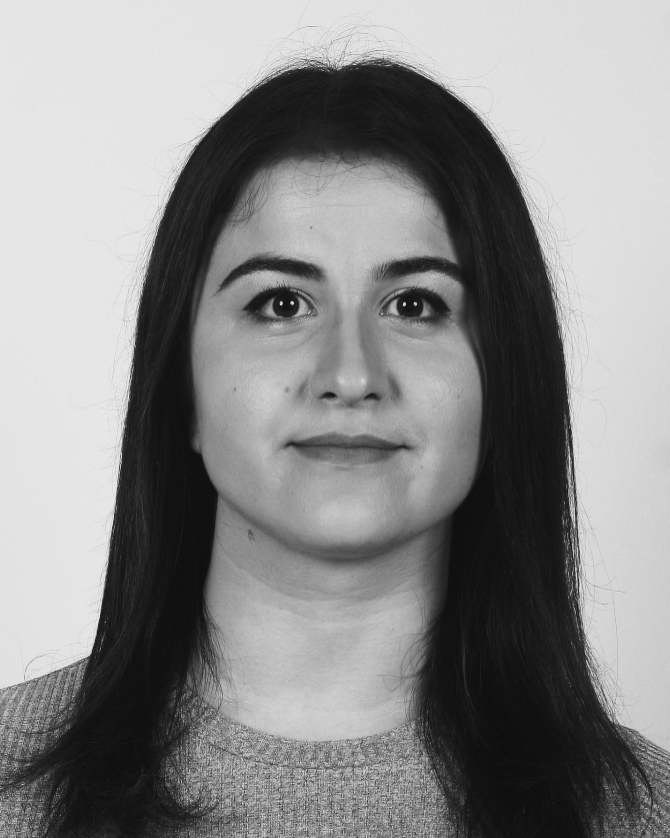

Greta Dragoti
Geoinformatics Engineer | Python Developer | Web Developer

Summary
I am a Rural, Surveying and Geoinformatics Engineer who loves coding and is doing her first steps to Web Development
Education
- START School of Code: Full Stack Developer Bootcamp, Socialinnov, Athens
- School of Rural, Surveying and Geoinformatics Engineering (B. Eng & M. Eng, 5-year joint degree, 300 ECTS), National Technical University of Athens, Greece (Grade:8.4/10.0)
Work Experience
Certificates
2024
- Certification of Accomplishment in Problem Solving, Hackerrank
2023
- 100 Days of Code: The Complete Python Pro Bootcamp - Udemy, Dr. Angela Yu
- The Complete Web Development Bootcamp, Udemy, Dr. Angela Yu
2021
- Introduction to Programming Using Python - Microsoft Certification
- HTML5 Application Development Fundamentals - Microsoft Certification
Computer and Technical Skills
- Programming / Web Development Skills: Python, C++, Javascript, React, CSS, HTML5, Matlab, R
- Microsoft Office: Word, Excel, PowerPoint
- LibreOffice: Writer, Calc
- 3D Modelling and Analysis: AutoCAD, Raport, ArcGIS, QGIS, SAGA GIS, Agisoft Photoscan, Cyclone, JetStream
- Photogrammetric Software PHOTOMOD 5 Lite, Agisoft PhotoScan
- Remote Sensing Software: ERDAS ER Mapper, eCognition, QGIS, SAGA GIS
- Survey equipment: Total Station Leica Viva TS15, Leica Viva GNSS GS08 και GS14, Laser Scanner Leica RTC360, Laser Scanner Leica P40, Laser Scanner FARO, NCTech iSTAR Camera
Other